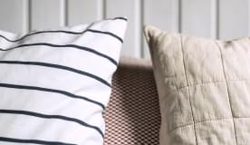
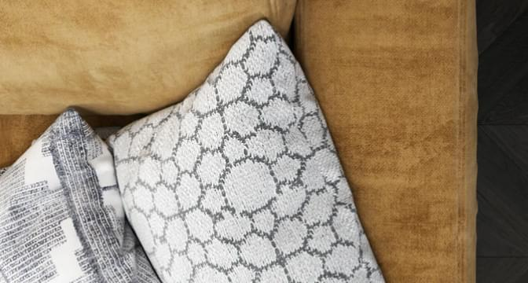

<section class="about"> <div class="container about--container grid"><h1 class="about__h1">О КОМПАНИИ</h1><p class="bg-h1 about__bg-h1">About us</p><p class="about-p1">Дорогие друзья! От имени команды Artendo textile studio, приветствую Вас на нашем сайте. </p><p class="about-p2">Премиальный европейский текстиль – одно из самых главных направлений работы коллектива. Создавать неповторимые интерьеры для наших дорогих клиентов, уделяя внимание мельчайшим деталям – вот то,  что по-настоящему вдохновляет дизайнеров нашей студии. </p><p class="about-p3">Наш коллектив сделает все, чтобы после сотрудничества с нами,  Вам было приятно сказать: « Да! Это именно то, что действительно достойно моего дома!»</p><aside class="about-aside"><p class="about__aside-p">Недавно мы писали статью о тканях, которые используем в работе, и источниках вдохновения.</p></aside><div class="about-priority"></div><p class="about-priority--p">Понимание тенденций рынка и особенностей менталитета наших клиентов приводит нас к созданию ценной концепции. Все проекты, которые мы делаем, созданы для людей. И это наш приоритет.</p><p class="about-offers">Мы предлагаем только лучшее и нам важно, чтобы все идеально сочеталось, будь то классический или современный интерьер. Самые последние коллекции, созданные европейскими дизайнерами  – мастерами своего дела из лучших тканей,  всегда на нашем складе.</p><p class="about-pillow-p">Подушки <a href="">Elixir №3</a> и <a href="">Elixir №21</a> из зимней коллекции 2020 года</p><p class="about-exclusive-p">Мы не хотим просто делать текстиль. Мы хотим его создать. Мы хотим, чтобы он  был  исключительным  и отличался, сохраняя качество на максимальном уровне.</p></div></section>